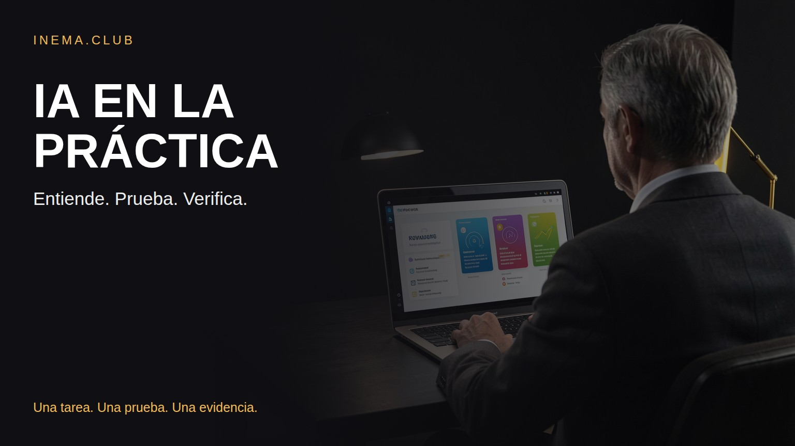
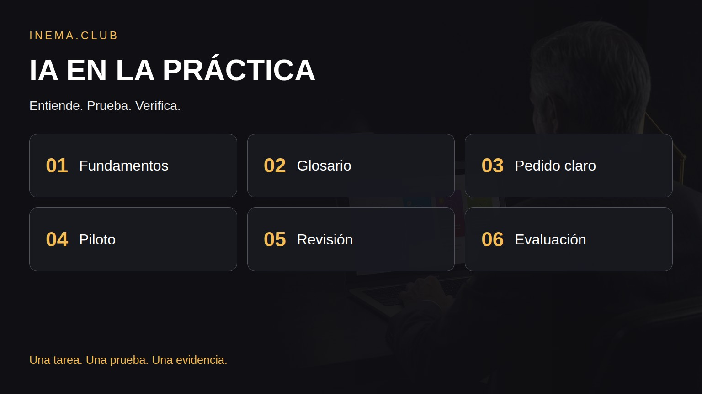

Deja de acumular herramientas y convierte una tarea real en una prueba piloto que puedas evaluar.

Este es un kit de estudio y práctica sobre inteligencia artificial para quienes quieren comprender el tema y aplicar una primera mejora en el trabajo. Reúne el análisis de un vídeo, un glosario y plantillas de diagnóstico, instrucciones y evaluación. Empiezas con una tarea real y compruebas el resultado antes de automatizar. Para usar los documentos, basta con leer y copiar; el evaluador opcional funciona con Python, sin servicios externos.

Una lectura crítica y un conjunto de recursos originales para transformar la información en práctica.
Modelo, aplicación, token, contexto y agente: un glosario para distinguir qué hace cada componente.
Define la tarea, el resultado esperado y la revisión. Usa las plantillas para empezar con datos ficticios.
Registra aciertos, fallos y tiempo total, incluida la corrección. Una respuesta bonita no basta.
El orden evita elegir una herramienta antes de comprender el problema.
El vídeo de referencia recorre la historia de la IA, los modelos de lenguaje, la infraestructura, los laboratorios, las herramientas, los prompts y las oportunidades. Nuestra contribución es convertir ese mapa en ejercicios y criterios de evaluación.
Consultar fuentes y capítulos con marcas de tiempo (en portugués) →Puedes dar los primeros pasos con un editor de texto y el asistente que ya utilizas.
Ejemplo: organizar notas de una reunión. Registra la entrada, el resultado, el tiempo manual y quién revisa.
Abrir diagnóstico del proceso (en portugués)Incluye contexto, material, formato y criterios. Pide que se señale la información que falta.
Copiar plantilla de prompt (en portugués)Incluye casos típicos, datos incompletos e instrucciones ambiguas. Evalúa también los fallos.
Descargar hoja de evaluación (en portugués) · Lista de revisión (en portugués)Suma el tiempo de uso, revisión y corrección. Si quieres calcularlo localmente, clona el proyecto y ejecuta el evaluador:
git clone https://github.com/inematds/roteiro-ia-pratica.git cd roteiro-ia-pratica python3 scripts/avaliar.py recursos/avaliacao.csv
La hoja inicial está vacía: el programa informa de los casos pendientes y no inventa un porcentaje de mejora.
Adopta, ajusta o abandona la prueba piloto. Registra los motivos antes de conectar sistemas.
Completar el brief de la prueba piloto (en portugués) · Seguir el plan de siete días (en portugués)Datos ficticios para probar sin depender de una integración.
“En la reunión decidimos revisar la propuesta. Ana quedó como responsable. Todavía no definimos la fecha.”
Decisión: revisar la propuesta. Responsable: Ana. Plazo: no indicado.
Si el asistente inventa una fecha, el resultado incumple el criterio factual. Esta prueba sencilla muestra por qué el contexto y la revisión deben ir de la mano.
Consulta el glosario para comprender los componentes del sistema.
Abrir glosario (en portugués) →Distingue las explicaciones, las opiniones y las predicciones en el contenido de referencia.
Leer el análisis (en portugués) →Contenido educativo abierto. El plan de siete días es una propuesta de práctica, no una promesa de dominar el tema. Vídeos derivados en preparación.